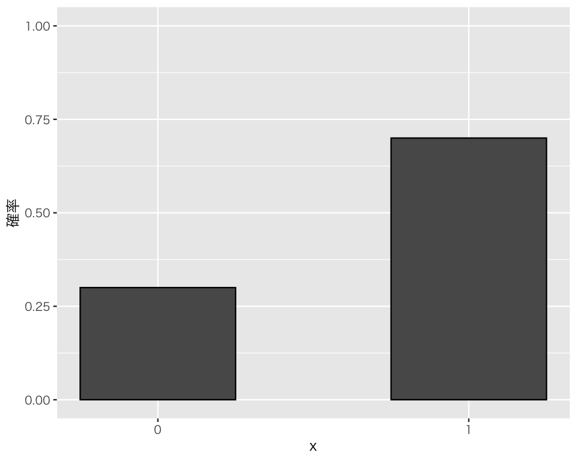
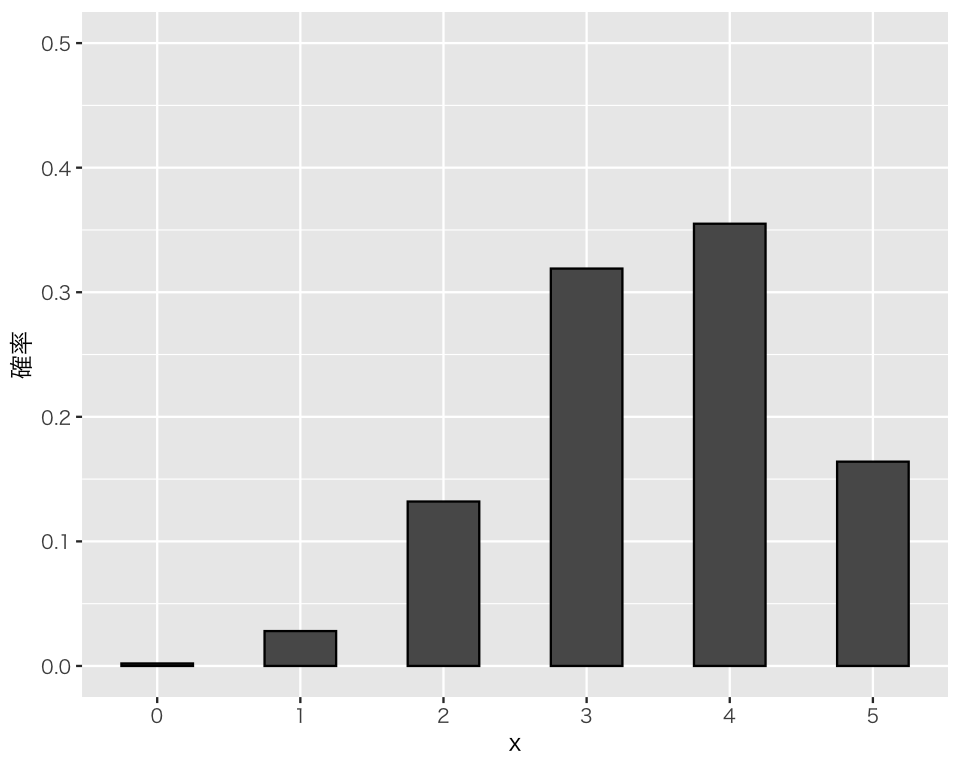
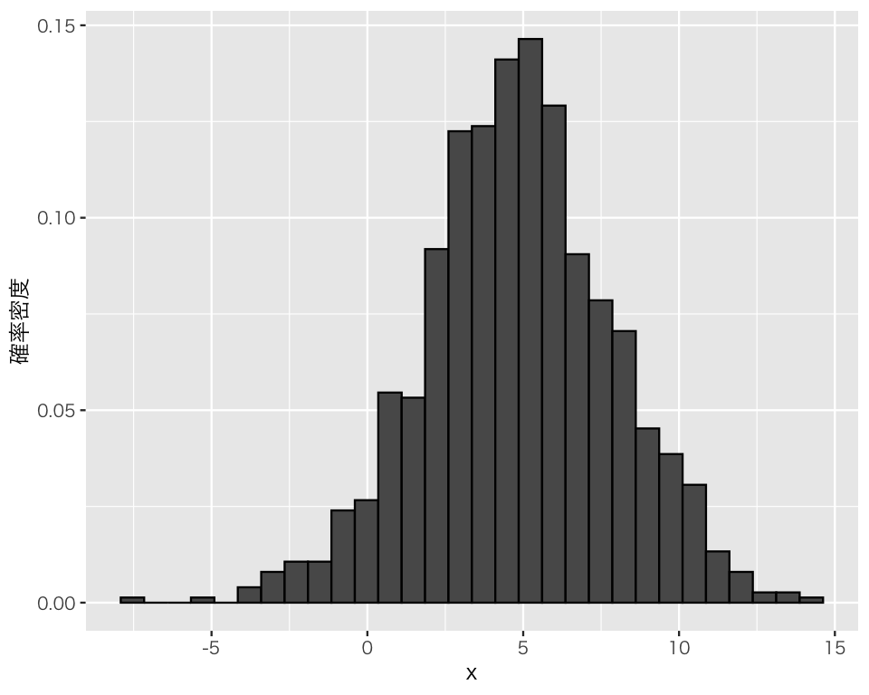
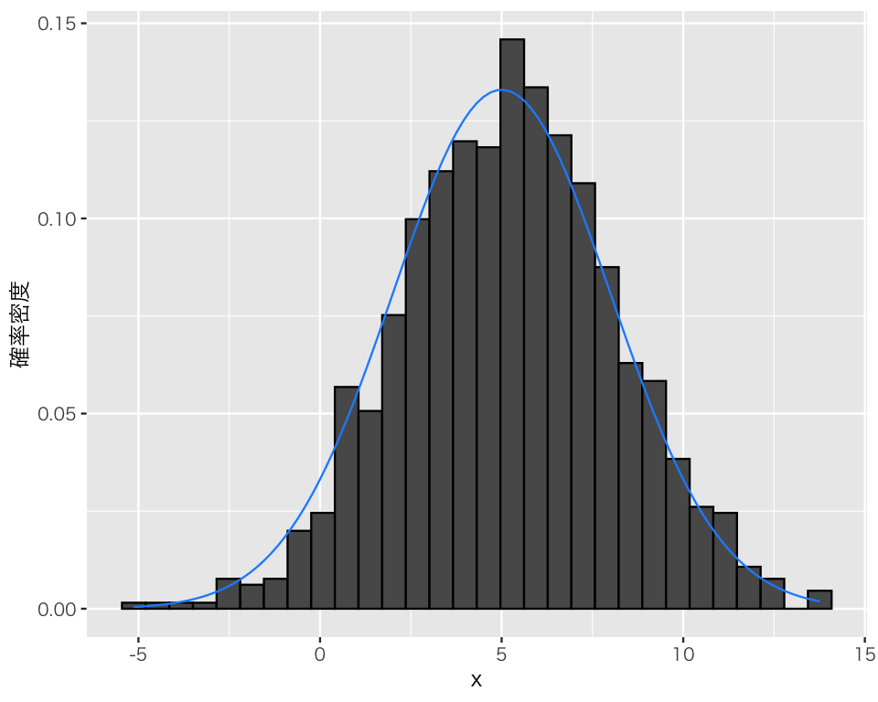
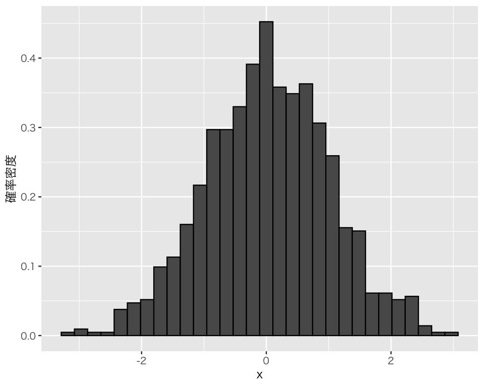
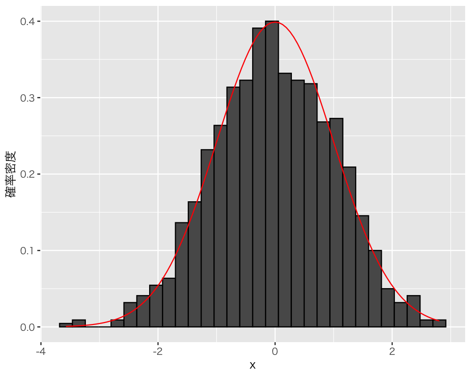

10 確率分布の代表値
今回の目標
- 確率分布の期待値と分散を理解する
まず、tidyverseパッケージを忘れずに読み込もう。
Windows ユーザ（大学PCを含む）は、
library(fontregisterer)
theme_set(theme_gray(base_size = 9,
base_family = "Yu Gothic"))を実行する。
Linux ユーザ（IPAexフォント が利用可能である場合）は、
theme_set(theme_gray(base_size = 9,
base_family = "IPAexGothic"))を実行する。
macOS ユーザは、
theme_set(theme_gray(base_size = 9,
base_family = "HiraginoSans-W3"))を実行する。
10.1 離散型分布の例
10.1.1 ベルヌーイ分布
確率変数\(X\)が、
\[ X \sim \mbox{Bernoulli}(\theta) \]
であるとする。
\(\theta = 0.7\)の場合について、確率率変数\(X\)の値を無作為に1,000個生成してみよう。
x_1 <- rbinom(1000, size = 1, prob = 0.7)得られた値の分布を棒グラフにして確認してみよう。
p_x1 <- tibble(x = x_1) |>
ggplot(aes(x = x, y = after_stat(count) / 1000)) +
geom_bar(color = "black",
width = 0.5) +
labs(y = "確率") +
scale_x_continuous(breaks = 0 : 1,
minor_break = NULL) +
ylim(0, 1)
plot(p_x1)
\(x\)の値は0と1の2種類だけで、\(\Pr(X = 1) \approx 0.7\) になっていることがわかる。
\(x_1\)の平均値を計算してみよう。
mean(x_1)[1] 0.712期待値である0.7に一致はしていないものの、ある程度近い値をとっている。
分散を計算してみよう。ベルヌーイ分布の分散は \(\theta (1 - \theta)\)なので、\(\theta=0.7\)の場合は \(\mathbb{V}[X] = 0.7 \cdot (1 - 0.7) = 0.21\)である。これに近い値になるだろうか。
var(x_1)[1] 0.2052613それなりに近い値が得られていることがわかる。
10.1.2 二項分布
確率変数\(X\)が、
\[ X \sim \mbox{Binomial}(n, \theta) \]
であるとする。
\(n = 5\), \(\theta = 0.7\)の場合について、確率率変数\(X\)の値を無作為に1,000個生成してみよう。
x_2 <- rbinom(1000, size = 5, prob = 0.7)得られた値の分布を棒グラフにして確認してみよう。
p_x2 <- tibble(x = x_2) |>
ggplot(aes(x = x, y = after_stat(count) / 1000)) +
geom_bar(color = "black",
width = 0.5) +
labs(y = "確率") +
scale_x_continuous(breaks = 0 : 5,
minor_break = NULL) +
ylim(0, 0.5)
plot(p_x2)
\(x\)の値は0から5までの整数（6種類）で、\(X=4\)の確率が最も大きく、\(X=0\)の確率が（台のなかでは）最も小さいことがわかる。
\(x_2\)の平均値を計算してみよう。
mean(x_2)[1] 3.475期待値である\(n\theta = 5\cdot 0.7=0.35\)に一致はしていないものの、ある程度近い値をとっている。
分散を計算してみよう。二項分布の分散は \(n\theta (1 - \theta)=5 \cdot 0.7 (1-0.7) = 1.05\)である。これに近い値になるだろうか。
var(x_2)[1] 1.002377それなりに近い値が得られているが、ややズレいている。
10.2 連続型分布の例
10.2.1 正規分布
確率変数\(X\)が、
\[ X \sim \mbox{Normal}(\mu, \sigma) \]
であるとする。
\(\mu = 5\), \(\sigma = 3\) の場合について、確率変数\(X\)の値を無作為に1,000個生成してみよう。
x_3 <- rnorm(1000, mean = 5, sd = 3)得られた値の分布をヒストグラムにして確認してみよう。
p_x3 <- tibble(x = x_3) |>
ggplot(aes(x = x, y = after_stat(density))) +
geom_histogram(color = "black") +
labs(y = "確率密度")
plot(p_x3)`stat_bin()` using `bins = 30`. Pick better value with `binwidth`.
ヒストグラムの概形を見ると、山が一つで、平均値を中心として左右対称になるという正規分布の特徴を見て取ることができる。
上のヒストグラムに、平均5，標準偏差3の正規分布の確率密度曲線を重ねてみよう。
p_x3_b <- p_x3 +
stat_function(fun = dnorm,
geom = "line",
color = "dodgerblue",
args = list(mean = 5, sd = 3),
inherit.aes = FALSE)
plot(p_x3_b)`stat_bin()` using `bins = 30`. Pick better value with `binwidth`.
多少の凹凸はあるものの、全体としては抽出元となった正規分布と、そこから生成された値の分布が同じような分布になっていることがわかる。
平均値を計算してみよう。
mean(x_3)[1] 4.92375期待値である5に一致はしないが、近い値をとっている。
標準偏差を計算してみよう。
sd(x_3)[1] 3.073687分布の標準偏差である3にほぼ一致する値が得られた。
得られた値のうち、「平均 ± 1標準偏差」「平均 ± 2標準偏差」の範囲に収まっている観測値の数を数えてみよう。 まず、「平均 ± 1標準偏差」の範囲にある個数は、
である。1000個中690個の値が「平均 ± 1標準偏差」の範囲にある、つまり、データの約69 %が「平均 ± 1標準偏差」に収まっている。理論的には、この範囲に収まる確率は
[1] 0.694274になるはずである。
同様に、「平均 ± 2標準偏差」の範囲にある個数は、
である。1000個中951個の値が「平均 ± 2標準偏差」の範囲にある、つまり、データの約95.1 %が「平均 ± 2標準偏差」に収まっている。理論的には、この範囲に収まる確率は
[1] 0.9594853になるはずである。
10.2.2 標準正規分布
確率変数\(X\)が、
\[ X \sim \mbox{Normal}(0, 1) \]
であるとする。この条件で、確率変数\(X\)の値を無作為に1,000個生成してみよう。
x_4 <- rnorm(1000, mean = 0, sd = 1)得られた値の分布をヒストグラムにして確認してみよう。
p_x4 <- tibble(x = x_4) |>
ggplot(aes(x = x, y = after_stat(density))) +
geom_histogram(color = "black") +
labs(y = "確率密度")
plot(p_x4)`stat_bin()` using `bins = 30`. Pick better value with `binwidth`.
ヒストグラムの概形を見ると、山が一つで、平均値を中心として左右対称になるという正規分布の特徴を見て取ることができる。
上のヒストグラムに、標準正規分布の確率密度曲線を重ねてみよう。
p_x4_b <- p_x4 +
stat_function(fun = dnorm,
geom = "line",
color = "#FF2400",
args = list(mean = 0, sd = 1),
inherit.aes = FALSE)
plot(p_x4_b)`stat_bin()` using `bins = 30`. Pick better value with `binwidth`.
多少の凹凸はあるものの、全体としては抽出元となった標準正規分布と、そこから生成された値の分布が同じような分布になっていることがわかる。
平均値を計算してみよう。
mean(x_4)[1] -0.05398142期待値である0に一致はしないが、近い値をとっている。
標準偏差を計算してみよう。
sd(x_4)[1] 0.9838469分布の標準偏差である1にほぼ一致する値が得られた。
得られた値のうち、「平均 ± 1標準偏差」「平均 ± 2標準偏差」の範囲に収まっている観測値の数を数えてみよう。 まず、「平均 ± 1標準偏差」すなわち\(-1 < X < 1\)の範囲にある個数は、
sum(x_4 > -1 & x_4 < 1)[1] 692である。1000個中692個の値が\(-1 < X < 1\)の範囲にある、つまり、データの約69.2 %が\(-1 < X < 1\)に収まっている。理論的には、この範囲に収まる確率は
になるはずである。
同様に、「平均 ± 2標準偏差」すなわち\(-2 < X < 2\)の範囲にある個数は、
sum(x_4 > -2 & x_4 < 2)[1] 958である。1000個中958個の値が\(-2 < X < 2\)の範囲にある、つまり、データの約95.8 %が\(-2 < X < 2\)に収まっている。理論的には、この範囲に収まる確率は
になるはずである。
10.3 実習課題
- ベルヌーイ分布、二項分布、正規分布のそれぞれについて、分布の形を決める値（\(\theta\), \(n\), \(\mu\), \(\sigma\)）を色々なものに変えて上の実習の内容を繰り返し、確率分布とその期待値・分散に関する理解を深めなさい。
- 上の実習ではそれぞれ1000個ずつの乱数を生成した。生成する乱数の個数を変えて（小さくしたり、大きくしたりして）、何が変化するか確認しなさい。